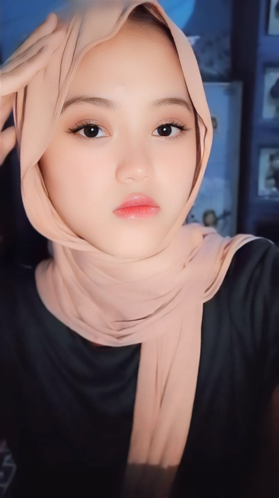
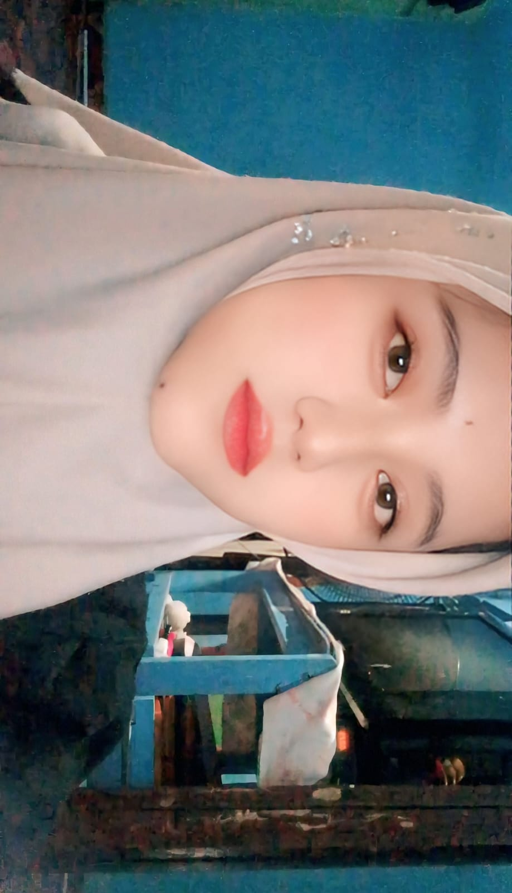
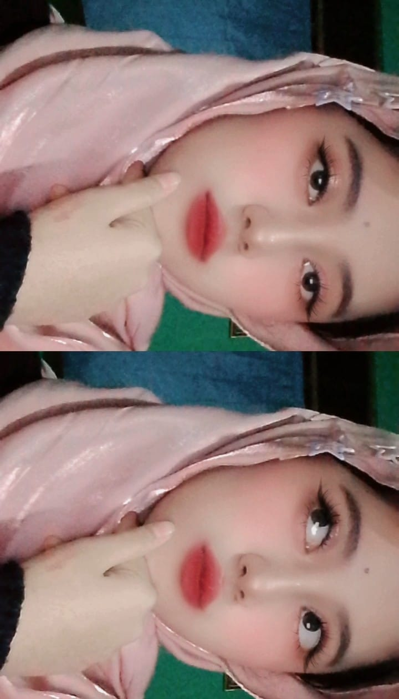
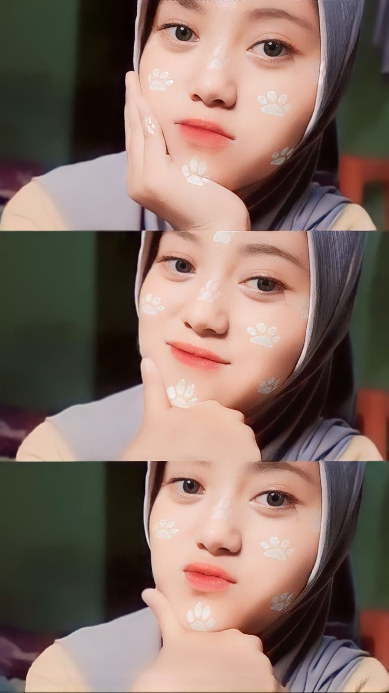
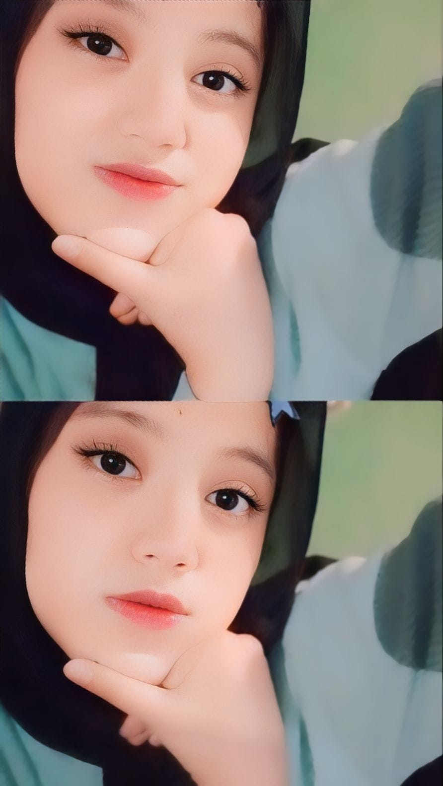
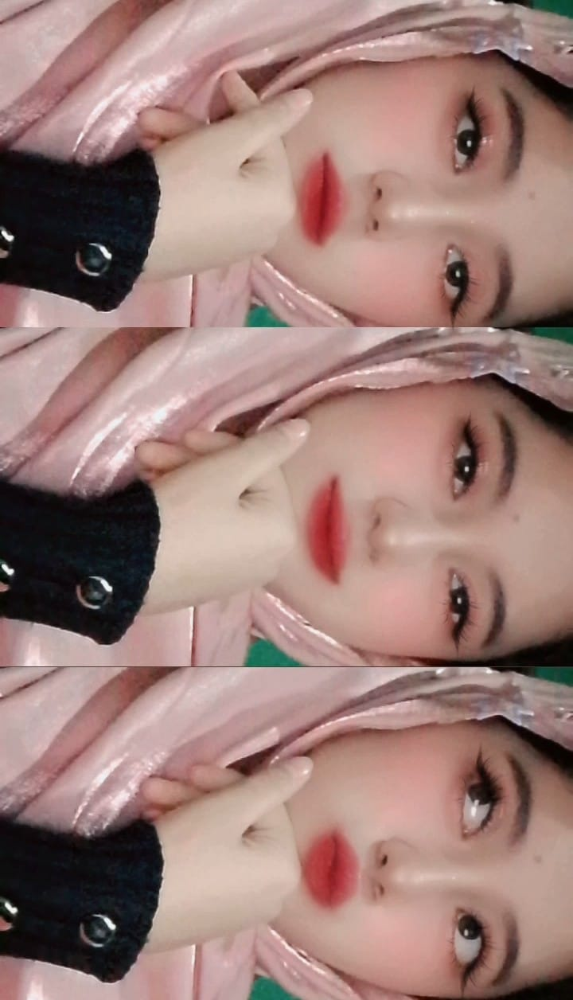
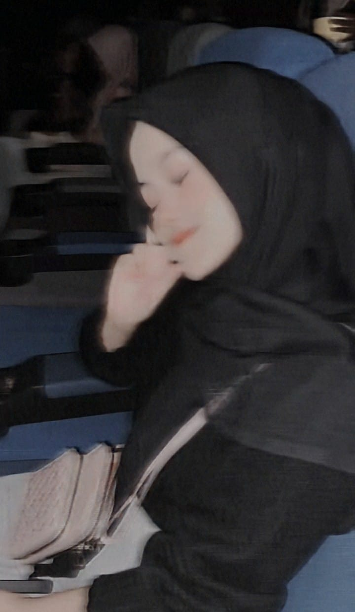
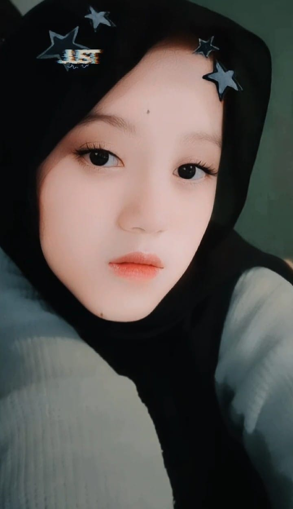
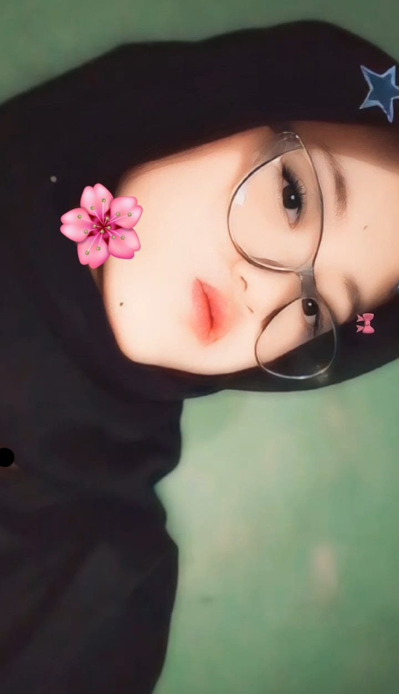
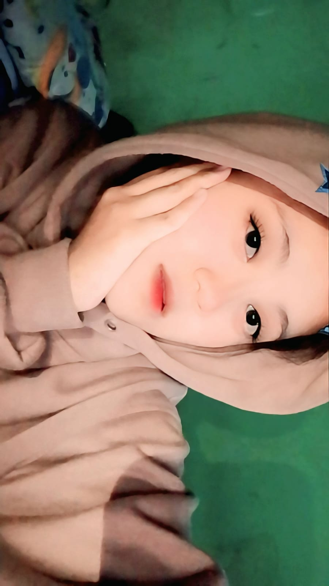

Aku masih ingat pertama kali aku suka sama kamu.
Saat itu cuma hal sederhana,
ketika kamu lewat bolak-balik di depan aku.
Entah kenapa dari momen kecil itu,
aku mulai merasa tertarik dan ingin mengenal kamu lebih dekat.
Awalnya hanya rasa kagum,
tapi semakin lama aku sadar,
kalau kamu adalah seseorang yang spesial buat aku.
Terima kasih sudah hadir dan menjadi bagian
dari cerita indah dalam hidup aku. ❤️

Kedua kalinya aku merasa semakin yakin dengan perasaan aku.
Setelah mengenal kamu lebih dekat,
aku sadar kalau kamu bukan hanya seseorang yang aku kagumi,
tapi seseorang yang membuat hari-hari aku terasa lebih berarti.
Dari hal-hal kecil yang kita lalui,
aku mulai nyaman dan bersyukur bisa mengenal kamu.
Terima kasih sudah hadir dan menjadi bagian
dari cerita hidup aku. ❤️

Dan untuk ketiga kalinya,
aku mulai sering menanyakan tentang kamu.
Aku mulai ingin tahu lebih banyak tentang kamu,
tentang cerita kamu, keseharian kamu,
dan hal-hal kecil yang membuat kamu bahagia.
Dari rasa penasaran itu,
aku semakin merasa nyaman dan ingin lebih dekat dengan kamu.
Tanpa aku sadari,
kamu mulai menjadi seseorang yang berarti buat aku. ❤️

Dan untuk keempat kalinya,
aku mulai memberanikan diri untuk mengenal kamu lebih dekat.
Saat pertama kali kita berkenalan,
jujur aku merasa gugup banget.
Banyak hal yang ingin aku katakan,
tapi rasa malu dan deg-degan membuat semuanya terasa sulit.
Tapi dari perkenalan sederhana itu,
aku senang karena akhirnya bisa mengenal kamu lebih dekat.
Sebuah awal kecil yang ternyata menjadi cerita yang berarti buat aku. ❤️

Dan untuk yang kelima kalinya,
aku mulai ingin mengenal kamu lebih dalam.
Aku mencoba untuk lebih sering berinteraksi dengan kamu,
mencari tahu tentang diri kamu,
tentang apa yang kamu suka dan apa yang membuat kamu bahagia.
Dari percakapan kecil yang kita lakukan,
aku mulai merasa lebih nyaman dan senang bisa dekat dengan kamu.
Pelan-pelan aku sadar,
kalau mengenal kamu adalah salah satu hal yang membuat aku bahagia. ❤️

Dan untuk yang keenam kalinya,
aku mulai merasa kalau bersama kamu itu menyenangkan.
Setiap kali kita berbicara,
rasanya selalu seru, nyaman, dan terasa asik.
Ada rasa tenang yang sulit aku jelaskan,
seakan semuanya terasa lebih ringan saat ada kamu.
Dari hal-hal sederhana yang kita lakukan,
aku mulai merasa lebih dekat dan bahagia bisa mengenal kamu.
Terima kasih sudah membuat hari-hari aku terasa lebih berwarna. ❤️

Dan untuk yang ketujuh kalinya,
aku mulai merasa ingin terus bersama kamu.
Setelah melewati banyak momen kecil bersama,
aku sadar kalau kehadiran kamu sudah menjadi sesuatu yang berarti buat aku.
Aku ingin tetap ada di samping kamu,
menemani cerita kamu,
dan menjalani banyak hal bersama.
Semoga kita bisa terus saling menjaga,
saling mendukung,
dan membuat banyak cerita indah ke depannya. ❤️

Dan untuk yang kedelapan kalinya,
aku masih ingat saat kamu naik mobil bareng aku.
Di momen itu,
aku mencoba memberanikan diri untuk lebih dekat dengan kamu.
Dengan rasa gugup dan deg-degan,
aku mencoba meraih tangan kamu.
Sederhana memang,
tapi bagi aku momen itu punya arti yang sangat berkesan.
Dari sana aku merasa semakin dekat,
dan semakin yakin kalau kamu adalah seseorang yang spesial buat aku. ❤️

Dan untuk yang kesembilan kalinya,
aku masih ingat saat kamu bersandar di dekat aku.
Aku juga masih ingat waktu aku main ke rumah kamu,
rasanya seru banget dan nyaman banget.
Dari obrolan sederhana sampai waktu yang kita habiskan bersama,
semuanya terasa menyenangkan.
Momen-momen kecil itu membuat aku semakin mengenal kamu,
dan membuat aku semakin bersyukur bisa punya kesempatan
untuk dekat dengan kamu. ❤️

Dan untuk yang kesepuluh kalinya,
aku mau mengucapkan terima kasih banyak buat kamu.
Terima kasih sudah mau menemani aku,
meskipun sebenarnya aku masih ingin menghabiskan waktu lebih lama bersama kamu.
Tapi karena keadaan dan waktu yang tidak memungkinkan,
mau bagaimana lagi.
Aku bersyukur bisa mengenal kamu,
karena kamu sudah membuat hidup aku terasa lebih berwarna lagi.
Terima kasih untuk semua cerita, waktu, dan momen indah yang sudah kita lewati.
Semoga kebaikan dan kebahagiaan selalu menyertai kamu.
Makasih yahhh, sudah menjadi bagian dari cerita hidup aku. ❤️💐🌸